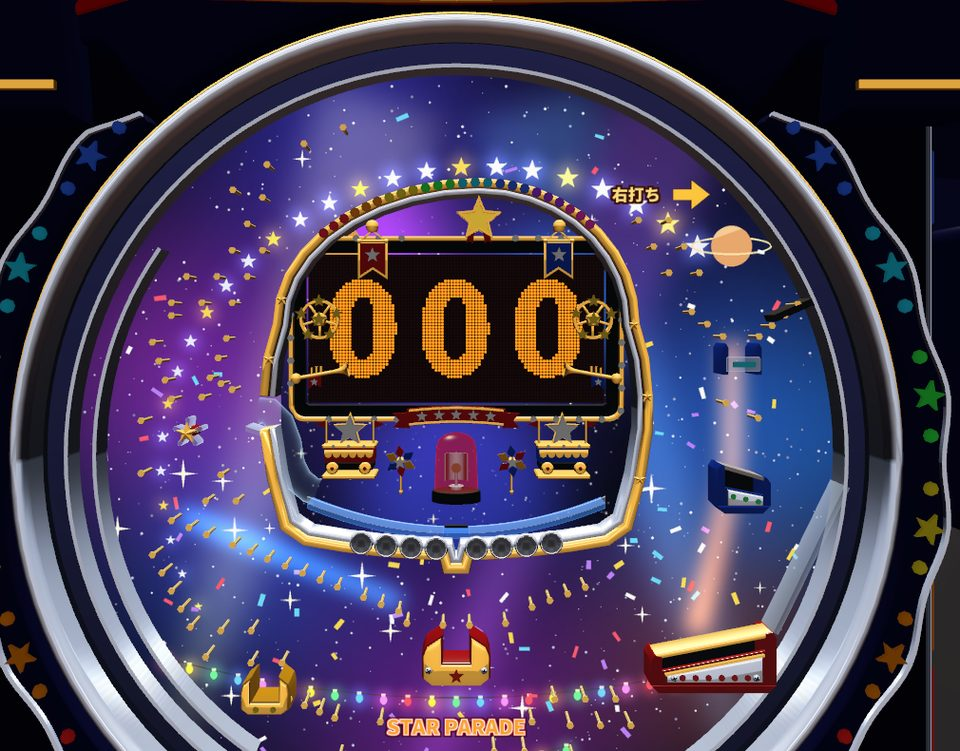
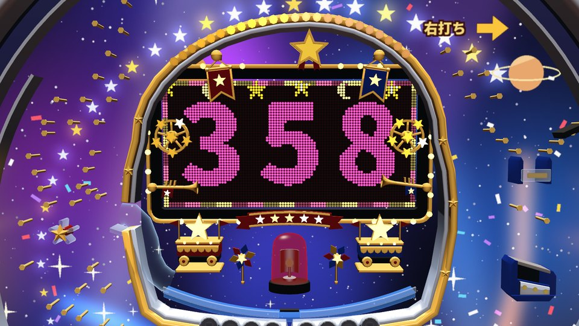
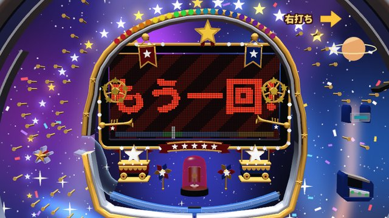

Mimicria Planetarium is a VRChat world made by the author of this site.
Last modified: 2026-11-28 (Sat)
STAR PARADE

Board
A kakuhen (probability-up) loop machine with a dot display and a patlamp. Kakuhen lasts until the next jackpot. A normal jackpot gives 15 spins of jitan (time-short mode), called Chance Time here. Four units on the west end of the front (south) row of the island.
* A pull-back (hitting again during the 15 Chance Time spins) happens about 19% of the time. Border: still being checked.
Jackpot split
Pocket
6R kakuhen
3R kakuhen
3R normal
Heso
10%
51%
39%
Den-chu
25%
51%
24%
* Heso is the start pocket, den-chu the electric tulip that opens during support. 777 is 6R kakuhen, other odd numbers are 3R kakuhen and even numbers are 3R normal. Even numbers still get a kakuhen upgrade chance.
Futo and densapo
Normal
Kakuhen / Chance Time
Futo hit
1/16
9/10
Futo spin
12 s
1.2 s
Den-chu opens
0.15 s x1
1.6 s x2
* Futo is the small lottery when a ball passes the gate. Densapo (electric support) is the mode where the den-chu opens often.
How to shoot
Strength is automatic
During jackpots, kakuhen and Chance Time it switches to right-shooting by itself
Left
Through the top nails, hakama, windmill, road nails, jump nail and life nails into the heso. Balls that enter the warp on the gimmick's left shoulder roll across the stage, drop through the center hole and tunnel, and come out right above the heso
Right
Return rubber, then through gate, den-chu and attacker
Modes
Mode
Odds
How to tell
Normal
1/69.7
Plain frame
Kakuhen
1/20.0
Red and gold light runs around the screen frame. The board glows red-purple
Chance Time
1/69.7
Blue frame. Spins left on the top edge, with a countdown from 5

In kakuhenIn Chance Time
Reliability tables
* Reliability is how often it turns into a jackpot when that effect shows up (analysis value, normal mode). 50% and up, and guaranteed effects, are in red.
Hold color
Color
Reliability
Blue
1.7%
Green
7.0%
Red
31.0%
Gold
64.1%
Rainbow
Guaranteed
Reach
Effect
Reliability
Normal reach
3.1%
Super reach
25.4%
Full rotation
Guaranteed
Final battle (PUSH)
51.6%
Notices
Color
Night Sky
Meteor
Any color
1.3%
18.4%
White
0.2%
3.5%
Blue
0.7%
10.1%
Green
1.7%
23.1%
Red
6.3%
52.9%
Gold
23.5%
83.8%
Rainbow
Guaranteed
Guaranteed
Step-up notice
Effect
Reliability
Up to step 1
4.3%
Up to step 2
10.6%
Up to step 3
34.1%
Up to step 4
66.9%
Up to step 5
91.0%
Gijiren (pseudo re-spin)
Effect
Reliability
×2
6.0%
×3
28.7%
×4
50.9%
Spin start
Effect
Reliability
Pause
1.6%
Reverse spin
4.0%
Shake
13.2%
One reel at a time
22.9%
Flash
48.8%
Drop
1.9%
Suck-in
2.1%
From the right
10.8%
Character pushes
41.4%
Reel style
Effect
Reliability
Upside down
2.1%
Page flip
7.1%
Drum
11.4%
Shuffle
24.0%
Omens (characters running along the top)
Effect
Reliability
Friends (3)
1.1%
Big parade (6)
2.6%
Gold
12.9%
Rainbow
66.0%
Notices during a reach
Effect
Reliability
Night Sky
14.8%
Meteor
30.2%
Super reach, second half
Effect
Reliability
Frame by frame
11.3%
Repaint
29.9%
Countdown
18.5%
Meteor
57.7%
Normal reach style
Effect
Reliability
Standard
2.4%
Zoom
4.3%
How the reach ends
Effect
Reliability
Dead stop
6.5%
Slide
18.8%
Step back
21.7%
Wobble
9.4%
Last-instant stop
29.4%
Gimmick
Effect
Reliability
Star drops
82.5%
Chance pattern
Effect
Reliability
311 (a later hold is a hit)
60.7%
Guaranteed effects
Rainbow hold, blackout, patlamp at spin start, revival, freeze, all lights out
Effects guide
Numbers
The numbers are orange dot digits and usually scroll vertically.
Holds
Up to 4 holds each for heso and den-chu, and den-chu holds go first. Colors go blue, green, red, gold, rainbow. Gold is gekiatsu ("super hot"), rainbow is guaranteed.
Hold lamps (the lit ones are holds)Hold change (leftmost goes white to blue)
Notices and gijiren
Night Sky is the weak notice and Meteor the hot one. Both come in 6 colors (white, blue, green, red, gold, rainbow). Meteor red and up is gekiatsu, rainbow is guaranteed
Notices also show up during a reach
Meteor noticeStep-up, step 4
Notice colors (frames)
Night Sky (green)Meteor (blue)Night Sky during a reach (gold)
Gijiren (frames)
1st (green)

2nd (red)3rd (gold)
Reach
The reach line is gold and the super numbers are red
Normal reach styles: Standard and Zoom. Super second-half types: Frame by frame, Countdown, Repaint and Meteor
Meteor: a shooting star hits the middle number 5 times and changes it each time. The 4th hit leaves it one short of a match
During a super, the star and moon on the dot display cheer you on. On a hit, the moon turns full
The final battle puts a PUSH button in front of the dot display
How a super reach plays out (frames)
1. Opening cut-in2. "激アツ" (gekiatsu) in the second half3. Final battle4. PUSH
There are several cut-in and PUSH pictures
Cut-in (moon)Cut-in (five stars)PUSH (text)Star and moon during a super
Patlamp
The rotating light inside the gimmick. If it spins, it's a jackpot.
When it spins on a jackpot
At spin start
4%
When the reach forms
18%
At the result (reach outcome)
78%
Premiums, hidden features and trivia
* Spoilers. Click to open
Premiums (guaranteed jackpot)
Effect
What happens
Blackout
A long blackout at spin start, then straight into full rotation
Freeze
Everything stops and goes silent the moment the spin starts, then a flash and straight into full rotation
All lights out
The screen and cabinet lights all go dark and silent, then a flash and straight into full rotation
Patlamp at spin start
The patlamp spins right at the start of the spin
Rainbow
Rainbow hold, rainbow notice (Night Sky / Meteor)
Full rotation
Only comes after a blackout, freeze or all lights out. Lines up 333 or 777. Spins to the very end and stops in rainbow
Revival
Fakes a miss on a super, then hits
Full rotation (frames; rainbow numbers stop on 333)
Hidden features
Kakuhen upgrade chance: an even-number hit first goes into chance time (15 jitan spins). After the last jitan spin misses, the reels spin again, and stopping on an odd number upgrades it to kakuhen. 30% of 3R kakuhen hits line up even first and then upgrade. 40% of 3R normal hits try the upgrade and fail
Hold sakiyomi (look-ahead): a hold can show one or two colors below its real color when it goes in. It moves up one step at a time while it waits, and whatever is left goes up as a chance-up at spin start. If a white hold just flickers at spin start, that's a gase (fake-out)
Chance Zone: a look-ahead zone that appears when 2 or more holds are queued ahead. A zone means at least a super reach
Expectation meter: the lights on both sides of the frame fill from the bottom in blue, green, red, gold. Only a rainbow hold, a blackout, full rotation or a winning result takes it to rainbow
Star gimmick: if it drops in the second stage of a super, 92.9%. Even if it goes back up on a "zannen" (miss), it drops again on a revival
Kakuhen upgrade
Trivia
Chance pattern 311: a no-reach miss that stops on 311 flashes gold and bounces. It shows up more when a later hold is a hit (60.7%). It never stops on 311 by coincidence
No notices, step-ups, gijiren or spin-start effects during kakuhen or Chance Time
Data counter
Data counter
On top of the machine: jackpots, streak, starts, last time and how many people are in the parlor.